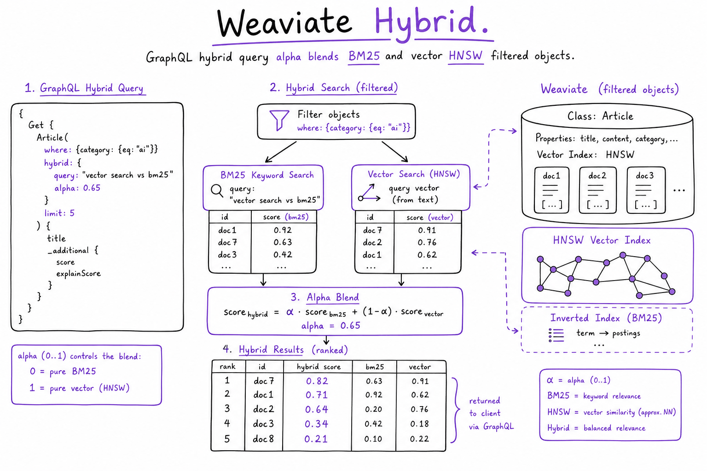
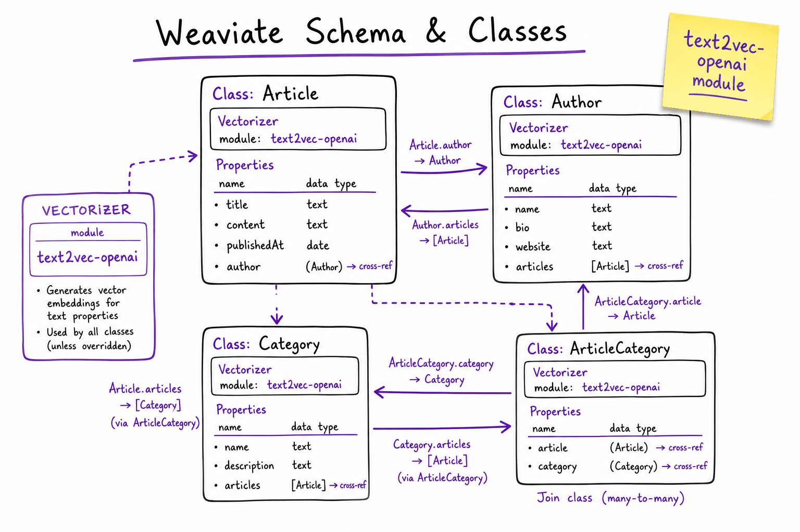
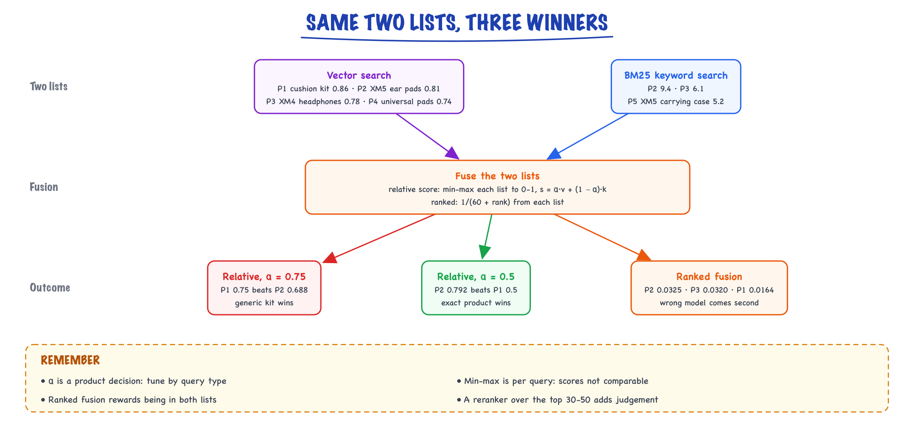
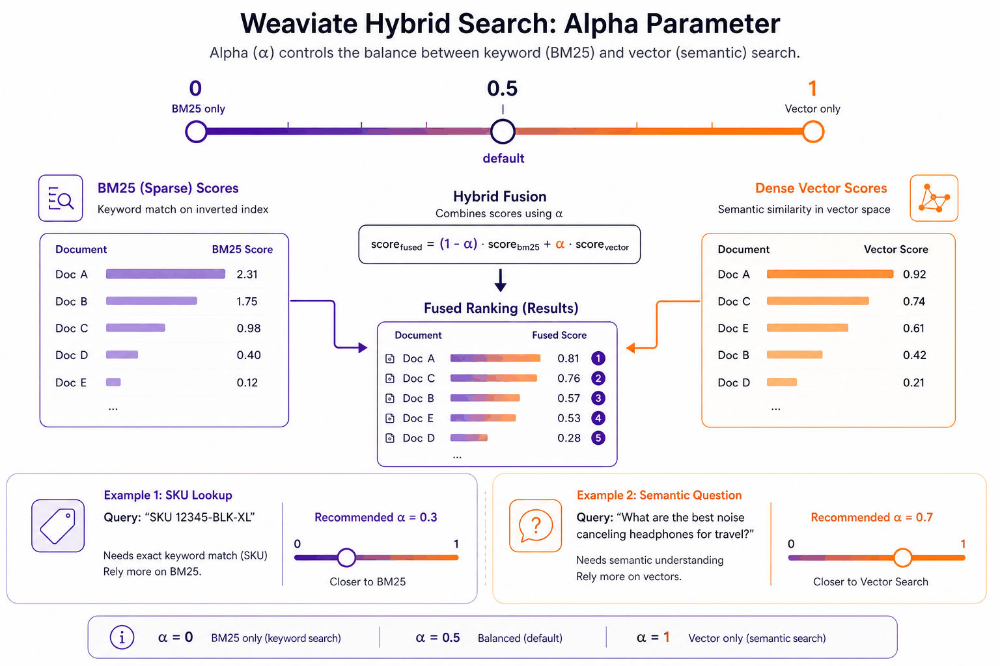
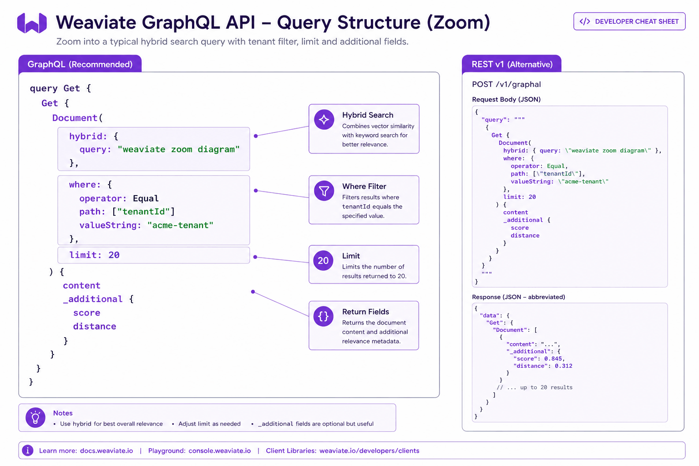

Weaviate // Tech & tools
Open-source vector database with modules, hybrid search and multi-tenancy.
01 — At a glance
Open-source vector database with native hybrid search (BM25 + vector), GraphQL/REST APIs, modular embedders, and multi-tenancy. Self-host on K8s or use Weaviate Cloud. Compare with Pinecone, pgvector, and Chroma in the Vector search & databases.

Weaviate: GraphQL/REST API → hybrid query (alpha blends BM25 + vector) → HNSW + inverted index → filtered objects with properties and _additional scores. Self-host cluster or managed cloud.

A Weaviate schema: classes with properties, a vectorizer module, and cross-references between classes.
02 — New words
| Word | Meaning |
|---|---|
| Collection | Weaviate's unit of schema (called a "class" in older versions): a named set of objects with typed properties and vector settings. |
| Object | One stored item: a UUID, its properties (title, price, ...) and one or more vectors. |
| Named vectors | Several separately indexed vectors on one object, for example one for the title and one for the description. |
| Module | A plug-in that lets the server call a model for you: a vectorizer (embeds text on import and query), a reranker, or a generative model. |
| Inverted index | A map from each term or property value to the objects containing it. Powers filters and BM25 keyword search. |
| BM25F | Keyword relevance scoring across several fields, with per-field weights (for example, title counts twice as much as description). |
| Hybrid search | One query that runs vector search and BM25 together and fuses the two result lists into one ranking. |
| \(\alpha\) (alpha) | The hybrid weight: 1 is pure vector, 0 is pure keyword, values between blend them. |
| Allow-list | The set of object ids that pass a filter, computed from the inverted index before the vector search runs. |
| Shard | A piece of a collection with its own vector index, inverted index and object store. With multi-tenancy, each tenant is its own shard. |
| Vector compression (PQ, BQ, SQ) | Storing compressed codes instead of full float vectors in memory, then rescoring the best candidates with full vectors. |
| Consistency level | How many replicas must acknowledge a write or answer a read: ONE, QUORUM or ALL. |
The lesson
03 — The question
Some retrieval problems are not served well by vectors alone or keywords alone. Product search is the clearest case: a shopper types "Sony WH-1000XM5 replacement ear pads", and the right result must match the exact model number and also understand that "ear cushions" means "ear pads". Weaviate is an open-source vector database (written in Go, self-hosted or managed) built around that kind of problem: it keeps a vector index and a keyword index side by side for every collection, answers hybrid queries in one call, and gives each tenant its own isolated shard.
The interview questions:
- How is a Weaviate collection stored, and what happens on import and on a query?
- How does hybrid search fuse vector and keyword scores, and how do you choose \(\alpha\)?
- How do multi-tenancy, filtering, replication and memory work at scale?
- When is it the right choice over pgvector or Pinecone?
The running example: an e-commerce platform that hosts online stores for 5,000 small merchants. A search-and-answer assistant lets shoppers search a store's catalogue and ask questions about products. There are 2 million products in total, about 400 per store on average, each with a title, description, brand, SKU, price and stock flag, embedded with a 1,024-dimension model. On a typical day about 900 stores receive traffic; the rest are dormant.
04 — Step 1: the mental model, objects with two indexes each
Think of Weaviate as a document store in which every collection automatically carries two search structures:
collection "Product" (per shard) object store UUID -> properties (title, description, sku, price, ...) inverted index term / value -> object ids (filters, BM25 keyword search) vector index HNSW over each named vector (nearest-neighbour search)
Every object written goes into all three. A vector query uses the vector index, a keyword query the inverted index, a filter the inverted index, and a hybrid query both search indexes plus the inverted index for filters. That is the core difference from a pure vector store, where keyword search and rich filtering are add-ons or another system, and from pgvector, where you assemble the same thing yourself in SQL.
The second idea is modules: Weaviate can call models on your behalf. With a vectorizer module configured, you import plain objects and the server embeds them; you query with text (near_text) and the server embeds the query. Reranker and generative modules extend the same idea to reranking results and generating answers in the query call. Useful, but each module puts an external model call inside your database's request path (Step 3).
05 — Step 2: the data model, properties, tokenization and ids
A collection declares its properties with data types (text, number, boolean, date, arrays) and, for text, a tokenization that decides how the inverted index splits it. This choice quietly decides whether keyword search works:
wordtokenization (the usual default for text) splits on non-alphanumeric characters and lower-cases: "WH-1000XM5" becomes the tokens "wh" and "1000xm5". Good for descriptions.fieldtokenization keeps the whole value as one token: "WH-1000XM5" stays intact, so an exact SKU match is a single precise term. Good for SKUs, brands as identifiers, and anything you filter on by exact value.
Make SKU a field-tokenized property and keep the model number in the title with word tokenization, and both exact and partial matches work.
Ids. Every object has a UUID. Generate it deterministically from your own key (a name-based UUID, version 5, from the store id and SKU), and re-importing a product overwrites it instead of creating a duplicate, which makes re-ingestion idempotent. Random UUIDs make every re-import a duplication bug.
Named vectors. An object can have several vectors, each with its own index: a title vector for short queries, a description vector for questions about features, perhaps an image vector. A query names which one to search. This beats concatenating everything into one embedding when queries target different aspects, at the price of one index's memory per vector.
Weaviate also supports cross-references between objects (product to brand). They are convenient for modelling, but following them at query time is far slower than reading a property, so store the values you filter or rank on directly on the object.
06 — Step 3: vectorizer modules versus bringing your own vectors
With a vectorizer module, import is simple: send properties, the server calls the embedding provider, stores the vector. The costs are less visible:
- Import throughput and query latency now include a call to an external embedding API, with its rate limits and outages. A provider hiccup becomes a failed batch import or a failed search.
- The vectorizer settings are part of the collection's configuration. Changing the embedding model means a new collection (or a new named vector) and a full re-embed.
- Batch imports report per-object failures (for example, rate-limited embedding calls). If you do not inspect the failed-objects list after each batch, some products are simply missing from search.
Bringing your own vectors (vectorizer set to none, vectors supplied on import and query) puts embedding in your pipeline, where you can batch, cache, retry and version it. Teams commonly prototype with a module and move to their own vectors for production ingestion; it is also how you guarantee the same model embeds documents and queries. Either way, choose the model with choosing an embedding model.
07 — Step 4: the write path, memory and compression
An import, normally sent in batches of a few hundred objects, writes each object to the shard's object store (a log-structured store on disk), adds its terms and values to the inverted index, and inserts each of its vectors into the HNSW graph, recording the change in a write-ahead log so the graph can be rebuilt after a crash. HNSW insertion is the expensive part; an asynchronous-indexing option lets imports return before vectors are indexed, trading search freshness for import speed.
Memory is where Weaviate deployments succeed or fail, because HNSW graphs and, by default, the vectors themselves are held in RAM for speed. For our catalogue:
| Configuration | Vectors in memory |
|---|---|
| One 1,024-dimension vector per product, uncompressed | \(2{,}000{,}000 \times 1{,}024 \times 4\) bytes \(\approx 8.2\) GB |
| Two named vectors (title and description) | about 16.4 GB |
| One vector with product quantization to 128 one-byte codes | \(2{,}000{,}000 \times 128\) bytes \(\approx 0.26\) GB |
| One vector with binary quantization (1 bit per dimension) | also about 0.26 GB |
Compression shrinks memory roughly 32-fold here. It loses some precision, so the engine searches with the compressed codes, fetches a larger candidate set, and rescores it with the full vectors from disk. Whether recall holds depends on the embedding model (binary quantization works well with some models and badly with others), so measure recall@10 against uncompressed search on real queries before switching. The HNSW links add memory on top in every configuration. The shared trade-offs of HNSW and quantization are in vector search.
08 — Step 5: filtering with allow-lists
Shoppers filter: in stock only, under $100, brand Sony. Weaviate evaluates the filter first, on the inverted index, producing an allow-list of matching object ids, then runs the vector search restricted to that list. Results are the best matches among allowed objects, the correct semantics for both shopping filters and permissions.
The cost depends on the allow-list's size relative to the shard:
- Large allow-list (in stock: 90% of products): the HNSW walk proceeds almost normally, skipping the few excluded nodes.
- Small allow-list (a rare brand: 30 products): walking a graph where nearly every node must be skipped is slow and can miss results. Below a configurable size, Weaviate abandons the graph and compares the query with every allowed object exactly ("flat" search), which for 30 or even tens of thousands of objects is fast and has perfect recall.
- The awkward middle, where the filter keeps a moderate fraction that is uncorrelated with the query's neighbourhood, is where graph search with filters is hardest; newer filter strategies (such as ACORN) change how the walk explores neighbours to keep it efficient. If filtered queries are slow, this is where to look.
Two practical rules: mark properties you filter on as filterable (and range-filterable for numbers you compare), so the inverted index can serve them; and if one filter value partitions every query (a store id), make it a tenant instead (Step 7), so the filter is replaced by choosing a shard.
09 — Step 6: hybrid search and how the scores are fused
A hybrid query runs a vector search and a BM25F keyword search over chosen properties (with optional boosts, such as title^2 to weight titles double), then fuses the two lists. Two fusion methods exist, and they behave differently.
Relative score fusion (the default in recent versions) rescales each list's scores to the range 0 to 1 with min-max normalisation (best result 1, worst 0), then combines:
\[ s = \alpha \, \hat{v} + (1 - \alpha)\, \hat{k} \]where \(\hat v\) and \(\hat k\) are the normalised vector and keyword scores (0 if the object is absent from that list).
Ranked fusion ignores score values and uses positions: each object gets \(1/(60 + \text{rank})\) from each list it appears in, as in reciprocal rank fusion, with the vector list's terms multiplied by \(\alpha\) and the keyword list's by \(1 - \alpha\). The worked numbers below show the unweighted sums; at \(\alpha = 0.5\) every score is halved and the order is unchanged.
Worked, for "Sony WH-1000XM5 replacement ear pads". Vector search returns P1 "ear cushion kit for over-ear headphones" (similarity 0.86), P2 "WH-1000XM5 ear pads, Sony-compatible" (0.81), P3 "Sony WH-1000XM4 headphones" (0.78), P4 "universal leather ear pads" (0.74). BM25 returns P2 (9.4), P3 (6.1), P5 "WH-1000XM5 carrying case" (5.2).
- Normalised vector scores: P1 1.0, P2 0.583, P3 0.333, P4 0. Normalised keyword: P2 1.0, P3 0.214, P5 0.
- Relative score, \(\alpha = 0.75\): P1 \(0.75\), P2 \(0.75 \times 0.583 + 0.25 \times 1.0 = 0.688\). The generic cushion kit beats the exact product.
- Relative score, \(\alpha = 0.5\): P2 \(0.792\), P1 \(0.5\). The exact product wins.
- Ranked fusion: P2 \(1/62 + 1/61 = 0.0325\), P3 \(1/63 + 1/62 = 0.0320\), P1 \(1/61 = 0.0164\). P2 wins, but the XM4 headphones (wrong model, not ear pads) come second, because appearing in both lists is rewarded regardless of how weak the keyword match was.

For "Sony WH-1000XM5 replacement ear pads", relative score fusion at α = 0.75 ranks a generic cushion kit first, α = 0.5 ranks the exact ear pads first, and ranked fusion puts the ear pads first but the wrong-model headphones second.
Three lessons. \(\alpha\) is a real product decision: catalogue search with model numbers wants more keyword weight than a "help me choose" question. Min-max normalisation is relative to each result list, so scores are not comparable across queries, and a single strong outlier compresses everyone else. And no fusion method fixes a ranking that needs judgement; a reranker over the top 30 to 50 does (see reranking). Tune \(\alpha\) and the fusion method on a labelled query set split by query type (identifier queries versus descriptive ones); see hybrid search for the general theory.
10 — Step 7: multi-tenancy, a shard per tenant
With multi-tenancy enabled on a collection, each tenant (each merchant store) gets its own shard: its own object store, inverted index and HNSW graph. Every read and write names the tenant. Three properties follow.
Isolation by construction. A query for store 42 physically cannot touch store 43's shard, so a missing filter cannot leak another merchant's catalogue. Deleting a merchant is deleting a tenant.
Work proportional to the tenant. A search in a 400-product store runs over 400 objects, not 2 million; small shards can use exact search and still be fast. The comparison with one big shard plus a store_id filter is the same argument as namespaces in Pinecone.
Memory only for active tenants. Tenants have an activity status. Active tenants are loaded and searchable; inactive ones stay on disk and use no memory; offloaded ones are moved to cold object storage. For our platform, if about 900 of 5,000 stores are active on a day, active vectors are about \(900 \times 400 \times 4\) KB \(\approx 1.5\) GB instead of 8.2 GB for all. The cost is a reactivation delay when a dormant store gets traffic, so automate activation (on first request, or on a schedule) and keep busy stores always active.
The limit: one query cannot span tenants. A platform-wide search ("find this product across all stores") needs a separate, non-tenant collection built for it.
11 — Step 8: scaling out, replication and consistency
A cluster spreads shards across nodes. A collection without multi-tenancy is split into a configured number of shards; with multi-tenancy, tenants are distributed over nodes. Each shard can be replicated: with a replication factor of 3, three nodes hold a copy, so one node can fail without losing data or availability.
Replicas of data are leaderless: any replica accepts reads and writes, and each request carries a consistency level:
- ONE: one replica must respond. Fastest, may read stale data.
- QUORUM: a majority, 2 of 3.
- ALL: every replica. Strongest, and fails if any replica is down.
The rule from distributed systems applies: if a write is acknowledged by \(W\) replicas and a read consults \(R\) replicas, the read is guaranteed to include the latest write when \(R + W > N\). With \(N = 3\), QUORUM writes (\(W = 2\)) plus QUORUM reads (\(R = 2\)) satisfy \(4 > 3\); QUORUM writes plus ONE reads do not (\(3 \not> 3\)), so a read may miss a just-written product until background repair catches up. For product search, ONE reads with QUORUM writes is usually fine: a price change visible a second later harms nobody. For permissions data, use QUORUM on both. (The schema itself is replicated with a consensus protocol, so all nodes agree on collection definitions.)
12 — Step 9: operations and failure modes
- Memory pressure. When vectors and graphs outgrow RAM, latency degrades sharply or nodes are killed. Monitor memory per node, set limits, and plan compression or more nodes before you need them.
- Silent partial imports. Batch imports return per-object errors. Check them every batch and retry failures, or search results will quietly lack products.
- Module dependency. With server-side vectorizers, the embedding provider's outage is your search outage. Bring your own vectors for critical paths, or have a fallback.
- Schema changes. Adding a property is easy; changing tokenization, a vectorizer or a vector index type usually means a new collection and a re-import. Use collection aliases or versioned names so the application can switch atomically.
- Backups. Use the backup feature to object storage, and keep your source data and import pipeline so a collection can be rebuilt.
- Upgrades. Rolling upgrades need replication; with a replication factor of 1, an upgrade is an outage.
13 — Choosing Weaviate
| Situation | Weaviate? | Reason |
|---|---|---|
| Hybrid keyword plus vector is central (catalogues, codes, names) | Strong fit | BM25F and fusion in one query, per-property boosts and tokenization |
| Thousands of tenants, many dormant | Strong fit | Shard per tenant, inactive tenants use no memory |
| Need open source or self-hosting (data residency, on-premises) | Yes | Runs anywhere; a managed cloud exists too |
| Vectors must join and commit with relational data | No | pgvector keeps them in one transaction |
| No appetite to operate a cluster | Managed offering, or Pinecone | Self-hosted memory, replication and upgrades need care |
| Prototype or tests | Fine, heavier than needed | Chroma is lighter |
The interview summary: Weaviate is the choice when hybrid retrieval and multi-tenancy are first-class requirements and you are willing to run (or pay for) a dedicated search database; its costs are memory planning and cluster operations.
14 — In code: the v4 client, and the fusion arithmetic
# Not run here: needs a Weaviate server and `pip install weaviate-client`. Written against the v4 Python client's documented API (2025). import weaviate from weaviate.classes.config import Configure, Property, DataType, Tokenization from weaviate.classes.query import Filter, HybridFusion, MetadataQuery from weaviate.classes.tenants import Tenant from weaviate.util import generate_uuid5 client = weaviate.connect_to_local() products = client.collections.create( "Product", properties=[ Property(name="title", data_type=DataType.TEXT), # word tokenization Property(name="description", data_type=DataType.TEXT), Property(name="sku", data_type=DataType.TEXT, tokenization=Tokenization.FIELD), Property(name="price", data_type=DataType.NUMBER), Property(name="in_stock", data_type=DataType.BOOL), ], vectorizer_config=Configure.Vectorizer.none(), # bring your own vectors multi_tenancy_config=Configure.multi_tenancy(enabled=True), ) products.tenants.create([Tenant(name="store-0042")]) store = products.with_tenant("store-0042") with store.batch.fixed_size(batch_size=200) as batch: for p in catalogue: batch.add_object(properties=p["props"], vector=p["vec"], uuid=generate_uuid5(f"store-0042:{p['props']['sku']}")) # idempotent print("failed:", len(store.batch.failed_objects)) # always check res = store.query.hybrid( query="Sony WH-1000XM5 replacement ear pads", vector=query_vec, alpha=0.5, fusion_type=HybridFusion.RELATIVE_SCORE, query_properties=["title^2", "description", "sku"], filters=Filter.by_property("in_stock").equal(True), limit=10, return_metadata=MetadataQuery(score=True), ) client.close()
The fusion arithmetic and the replication rule, runnable anywhere:
def minmax(scores): lo, hi = min(scores.values()), max(scores.values()) return {k: (v - lo) / (hi - lo) if hi > lo else 1.0 for k, v in scores.items()} def relative_score_fusion(vec, kw, alpha): v, k = minmax(vec), minmax(kw) ids = set(v) | set(k) return {i: alpha * v.get(i, 0.0) + (1 - alpha) * k.get(i, 0.0) for i in ids} def ranked_fusion(vec, kw, k=60): # unweighted RRF; Weaviate also scales the vector list by alpha and the keyword list by 1 - alpha out = {} for lst in (vec, kw): for rank, i in enumerate(sorted(lst, key=lst.get, reverse=True), start=1): out[i] = out.get(i, 0.0) + 1 / (k + rank) return out # query: "Sony WH-1000XM5 replacement ear pads" vec = {"P1 ear cushion kit": 0.86, "P2 XM5 ear pads": 0.81, "P3 XM4 headphones": 0.78, "P4 universal pads": 0.74} kw = {"P2 XM5 ear pads": 9.4, "P3 XM4 headphones": 6.1, "P5 XM5 carrying case": 5.2} for alpha in (0.75, 0.5): fused = relative_score_fusion(vec, kw, alpha) top = sorted(fused.items(), key=lambda x: -x[1])[:3] print(f"relativeScore alpha={alpha}:", [(i, round(s, 3)) for i, s in top]) top = sorted(ranked_fusion(vec, kw).items(), key=lambda x: -x[1])[:3] print("ranked fusion:", [(i, round(s, 4)) for i, s in top]) # replication: with N copies, reads see the latest write when R + W > N N = 3 for name, level in (("ONE", 1), ("QUORUM", N // 2 + 1), ("ALL", N)): print(f"{name}: {level} of {N} replicas; QUORUM write + {name} read overlap: {N // 2 + 1 + level > N}")
It prints P1 first at \(\alpha = 0.75\) (0.75 against 0.688), P2 first at 0.5 (0.792), ranked fusion with P2 then the XM4 headphones, and that only QUORUM or ALL reads are guaranteed to overlap a QUORUM write: the results of Steps 6 and 8.
Quick reference
15 — What & Why
Weaviate is an open-source vector database written in Go. Its killer feature is hybrid retrieval in one API call — BM25 keyword scores fused with dense vector similarity via an alpha parameter. It also supports GraphQL for flexible queries, pluggable vectorizer modules, and first-class multi-tenancy.
Functional requirements
- Schema classes with typed properties and vectorizer config
- Vector search via nearText / nearVector with HNSW index
- Keyword search via BM25 inverted index on text properties
- Hybrid search combining both with tunable alpha
- Multi-tenancy with isolated tenant shards per class
- Modules for server-side embedding, reranking, and generation
Non-functional requirements
- Latency: p99 hybrid query 30–80 ms at millions of objects (cluster-dependent)
- Availability: 3+ node replication for self-host HA
- Ops: K8s Helm chart, Prometheus metrics, S3 backups
- Scale: 1M–100M+ objects; horizontal sharding in enterprise tiers
When Weaviate wins: hybrid BM25+vector is a core requirement and you can self-host or use Weaviate Cloud. For zero-ops pure vector at hyperscale, Pinecone may be simpler.
16 — Core Concepts
| Term | Definition | Gotcha |
|---|---|---|
| Class | Schema collection (like a table) with properties + vectorizer. | Changing vectorizer requires re-index. |
| Object | Instance in a class with properties and vector. | UUID assigned; batch import for scale. |
| Hybrid | alpha * dense + (1-alpha) * BM25 fusion. | Tune alpha on golden query set. |
| nearText | Query by raw text; module embeds server-side. | Must match ingest vectorizer module/model. |
| where filter | GraphQL predicate on properties. | Combine with hybrid for tenant ACL. |
| Tenant | Isolated shard when multiTenancy enabled. | Query must specify tenant name. |
| Module | Plugin: text2vec-openai, reranker-cohere, etc. | Each adds latency and external API dependency. |
| _additional | Metadata block: score, distance, certainty. | Log for eval and reranker input. |
17 — API / Interface Surface
Schema creation (REST)
POST /v1/schema
{
"class": "Document",
"vectorizer": "text2vec-openai",
"moduleConfig": {
"text2vec-openai": { "model": "text-embedding-3-small" }
},
"properties": [
{ "name": "content", "dataType": ["text"] },
{ "name": "tenantId", "dataType": ["text"] },
{ "name": "docType", "dataType": ["text"] }
],
"multiTenancyConfig": { "enabled": true }
}
Hybrid GraphQL query
{
Get {
Document(
tenant: "acme"
hybrid: {
query: "refund policy for enterprise customers"
alpha: 0.5
}
limit: 20
where: {
path: ["docType"]
operator: Equal
valueText: "policy"
}
) {
content
tenantId
_additional { score distance id }
}
}
}
Batch import (REST)
POST /v1/batch/objects
{ "objects": [
{ "class": "Document", "tenant": "acme",
"properties": { "content": "...", "tenantId": "acme", "docType": "policy" }}
]}
Bring-your-own-vector: set "vectorizer": "none" and supply vector on import — same pattern as Pinecone upsert with pre-computed embeddings.
18 — When to Use / When NOT
| Scenario | Use Weaviate | Alternative |
|---|---|---|
| Hybrid BM25+vector native | Yes — one API call | Dual ES + pgvector + RRF |
| GraphQL-flexible retrieval | Yes | REST-only Pinecone |
| Zero ops, no K8s team | Weaviate Cloud or Pinecone | Self-host Weaviate alone |
| SQL JOINs with orders/users | No | pgvector |
| Local notebook prototype | Heavy | Chroma |
| Server-side vectorization modules | Yes — text2vec-* modules | App-layer embed only |
19 — Architecture
Client ──GraphQL──► Weaviate Cluster (3+ nodes)
├── HNSW (vector)
├── Inverted index (BM25)
└── Tenant shards (multi-tenancy)
OpenAI/Cohere ◄── modules (text2vec, reranker) at ingest/query
Self-hosted Weaviate requires K8s ops: replication, backups, upgrades. Weaviate Cloud offloads that — similar ops model to Pinecone.
20 — Deep Dive: Hybrid Search
Hybrid search is Weaviate’s standout feature. One query runs BM25 on text properties and vector similarity in parallel, then fuses scores with alpha:
alpha = 0— BM25 only (exact keyword queries, SKUs, error codes)alpha = 1— vector only (semantic paraphrase)alpha = 0.5— balanced default starting point
| Query type | Suggested alpha | Why |
|---|---|---|
| SKU / part number lookup | 0.2–0.3 | Exact token match dominates |
| General Q&A | 0.5–0.6 | Balance semantics + keywords |
| Conceptual / paraphrase | 0.7–0.9 | Embedding similarity dominates |
Tuning workflow
- Build golden query set (50–200 questions) with labeled relevant doc IDs
- Grid search alpha ∈ {0.3, 0.5, 0.7} — measure recall@5 and MRR
- Optionally route alpha by query classifier (SKU detector → low alpha)
- Add Reranking on top-20 (+30–80 ms)
See also: Hybrid search & query understanding system sheet and Vector search & databases.

Hybrid alpha: 0 = BM25 only, 1 = vector only, 0.5 = default fusion. Grid-search alpha on your golden set — do not ship alpha=0.5 blindly.
21 — Deep Dive: GraphQL API
Weaviate exposes a GraphQL API for flexible retrieval — pick exactly which properties to return, nest filters, and request _additional metadata in one round trip.
Query modes
| Mode | GraphQL block | Use when |
|---|---|---|
| Hybrid | hybrid: { query, alpha } | BM25 + vector combined |
| Vector | nearText: { concepts: [...] } | Semantic only; module embeds |
| Keyword | bm25: { query } | Exact token search only |
| Filter | where: { path, operator, value } | Tenant ACL, doc type |
# nearVector with pre-computed query embedding
{
Get {
Document(
nearVector: { vector: [0.012, -0.034, ...] }
limit: 20
) { content _additional { certainty distance } }
}
}
REST alternative: /v1/objects CRUD is simpler for scripts; GraphQL wins for complex retrieval in application code.

GraphQL Get query: hybrid block + where filter on tenantId + _additional { score distance } for logging and reranker input.
22 — Multi-Tenancy
Enable multiTenancyConfig on a class to isolate each tenant’s objects in separate shards. Queries must specify tenant: "name" — strong isolation for SaaS RAG.
| Feature | Behavior |
|---|---|
| Tenant activation | Lazy or auto-create on first import |
| Query scope | Must pass tenant; cross-tenant search blocked |
| Delete tenant | Drop tenant shard for offboarding |
| Compare Pinecone | Similar to Pinecone |
# Import with tenant
{ "class": "Document", "tenant": "acme", "properties": { ... } }
# Query with tenant
Get { Document(tenant: "acme", hybrid: { ... }) { ... } }
23 — Modules
Weaviate modules extend functionality via config — no code forks required.
| Module | Purpose | Production note |
|---|---|---|
text2vec-openai | Embed at ingest/query via OpenAI | Track model version; rate limits |
text2vec-cohere | Cohere embeddings | Same model at ingest + query |
reranker-cohere | Server-side rerank | Or external Reranking service |
generative-openai | RAG generation in Weaviate | Prefer app-layer LLM control |
Module drift risk: if ingest used text2vec-openai v1 but query sends BYO vectors from v2, scores are meaningless. Version everything.
24 — Weaviate vs Pinecone vs pgvector vs Chroma
In production
25 — Production & Ops
| Concern | Practice |
|---|---|
| HA | 3+ node cluster; replication factor ≥ 2 |
| Backups | S3 backup module; test restore quarterly |
| Metrics | Prometheus: query latency, object count, hybrid alpha in logs |
| Upgrades | Rolling K8s upgrade; read release notes for index migrations |
| Eval | Weekly recall@5 on golden set per alpha setting |
| Cloud option | Weaviate Cloud when no K8s platform team |
27 — Where people get lost
- Self-host without K8s expertise: replication and upgrades bite — use Weaviate Cloud or Pinecone.
- Wrong alpha for query type: SKU queries need low alpha; semantic-only needs high alpha.
- Module embed model drift: ingest module ≠ query embed path — re-index required.
- Missing tenant in query: multi-tenancy enabled but query omits tenant → error or empty.
- No reranker after hybrid: fusion alone often insufficient for top-5 quality.
- GraphQL over-fetch: returning huge text properties on every query — latency and cost.
- "Hybrid search fixes exact-match queries automatically." Only if tokenization keeps identifiers intact and \(\alpha\) gives keywords enough weight. Check both on identifier queries.
- Reading fused scores as absolute. Relative score fusion normalises within each result list; a score of 0.8 means different things for different queries. Do not threshold on it across queries.
- Random UUIDs. Re-imports duplicate objects. Derive UUIDs from your own keys.
- Ignoring batch failures. Imports can succeed overall while individual objects fail. Inspect failed objects every batch.
- A store-id filter instead of tenants. Every query then searches all 2 million products and one missing filter leaks data. Make the partition a tenant.
- Forgetting memory per named vector. Each named vector is a full index. Two 1,024-dimension vectors on 2 million objects is about 16 GB before links.
- Assuming ONE reads are consistent. With \(N = 3\), only \(R + W > 3\) guarantees a read sees the latest write.
28 — How this connects
Builds on
- Choosing an embedding model — Model families, dimensions, benchmarks, cost, and when to fine-tune or switch.
- Vector search & databases — Exact and approximate nearest neighbours, HNSW and IVF, and choosing a vector database.
- The RAG pipeline — Retrieve, augment, generate: every stage from a question to a grounded, cited answer.
- Hybrid search & query understanding — BM25 plus vectors fused with RRF, query rewriting, decomposition and HyDE.
- Reranking — Cross-encoder rerankers: retrieve wide, rescore, keep the best few.
- pgvector — Vector search inside Postgres: HNSW/IVFFlat, hybrid with full-text, operations.
Where this shows up later
- Chroma — Lightweight embedded vector store for prototypes and local RAG.
29 — Check yourself
Vector scores for three results are 0.90, 0.85, 0.70; keyword scores for two of them are 12 (first result) and 4 (third result). With relative score fusion and \(\alpha = 0.6\), what does the first result score?
3 million objects with one 768-dimension vector each. How much memory for uncompressed vectors, and with binary quantization?
A shopper searches for SKU "AB-77-X" and gets nothing relevant, though the product exists. What do you check?
Replication factor 3, writes at QUORUM. A product's price changed and a read at ONE shows the old price. Is that a bug?
8,000 tenants with 500 objects each at 1,024 dimensions; 1,000 are active on a given day. Memory for active vectors versus all?
Your team wants search results to reflect a product deletion within the same request that deleted it, and the products table lives in Postgres. Weaviate or pgvector?
A rare-brand filter matches 25 products in a 2-million-object collection, and filtered queries are slow. Why, and what helps?
What is Weaviate’s killer feature vs Pinecone?
Explain alpha in hybrid search.
Self-host vs Weaviate Cloud?
GraphQL vs REST — when to use which?
How does multi-tenancy work?
Server-side vectorization — pros and cons?
Weaviate vs pgvector for a Postgres shop?
How integrate reranking?
reranker-cohere module or external cross-encoder (Reranking) → top-5 to LLM. Always measure rerank lift on golden set.